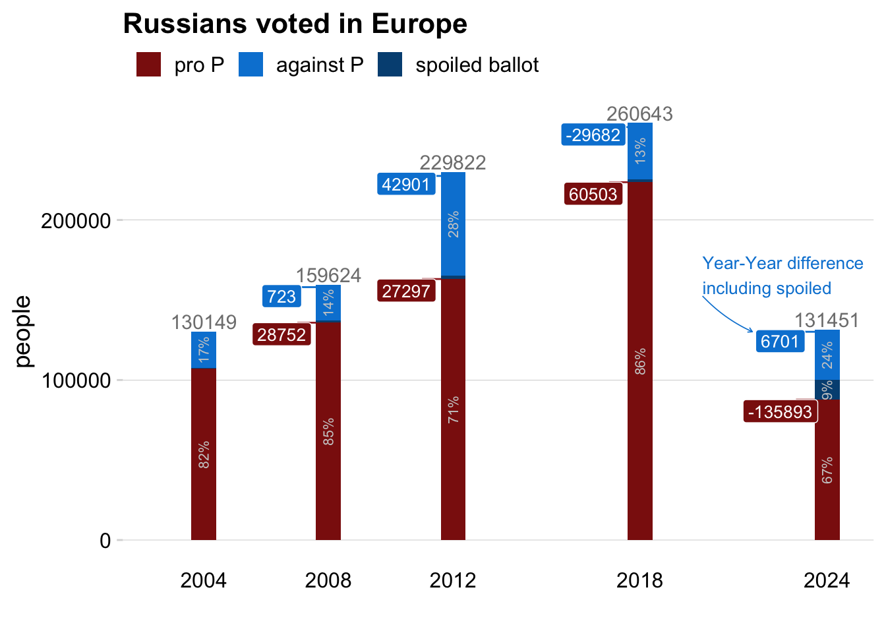

Выборы в России из-за границы
Как голосуют на российских выборах граждане РФ проживающие за границей
Коротко
В 2020 году мне стало интересно, как проголосовала заграница на референдуме по изменению конституции. В результате, родилась вот такая короткая заметка. В 2024 прошли выборы в России. На основе данных собранных мной по заграничному голосованию в Новой газете Европа вышла статья по участкам за границей. За что большое спасибо Алесе Соколовой, подписывайтесь на её канал.
Тут кратко некоторые вещи, заинтересовавшие лично меня в процессе работы над данными, в дополнение к статье.
Выросла ли явка? Мы все видели огромные очереди в избирательные участки, многие люди не попали внутрь. Краткий ответ в абсолютных значениях - нет.
Какой “демографический” состав голосующих за рубежом? Почему на всех прошлых выборых за границей результат, за исключением 20-го и 24-го годов, в среднем выше чем официальный в России? В основном за счет военных или территорий контролируемых Россией, как ни странно и за границей есть вбросы.
Менялось ли как-то распределение голосующих от года к году и как? Менялось, в 2018 году на выборы пришел очень маленький процент людей голосующих против Путина, в 2024 году таких было сильно больше, а людей за Путина пришло меньше.
Количество людей пришедших на голосование
Как видно на Figure 1 общее абсолютное количество голосующих меньше чем в 2018 году, по-видимому, основная причина - закрытие участков для голосования.
Тем не менее, как и многие я видел огромные очереди в избирательные участки в Вене, Берлине, Париже, Лондоне и прочих городах. Как изменилась явка на зарубежных участках? На Figure 2 по оси Х показано изменение явки в 2024 по сравнению с 2018, положительные значения - людей пришло больше 2024, размер точки - общее кол-во людей пришедших на участок.
В глаза бросаются пять участков справа: Анкара, Молдова, Бангладеш, Кипр и Египет. В них положительная разница в явке более 500%. Суммарно эти участки дают 17 % всех голосов.
Пропускная способность в Зальцбурге была 37 человека на одного человека в комисии в час, в Вене 29. Если предположить что скорость в Зальцбурге нормальная, то по количеству проголосовавших людей можно предположить где могли произойти вбросы. На Figure 3 показаны участки составляющие 60% всех голосующих.
Демографический состав голосующих
Среди избирателей за рубежом очень много военных частей или контролируемых Россией квазигосударств (Абхазия, Приднестровье), их результат на выборых обычно предсказуемо выше 70%, Figure 4.
У Важных историй получилось, что процент военных и квазигосударств составляет 46%, у меня вышло в районе 37% в 2024 Figure 5.

Динамика голосования
Рассматривая данные с 2004 года, можно обратить внимание, что в 2012 было довольно много стран где результат Путина был ниже 50%. В 2018 таких стран не было, в 20-ом и 24-ом снова распределение стало более широким Figure 6, Figure 7

Особенностью этих выборов стало не увеличение явки, она не особо выросла, учитывая закрывшиеся участки, а то что количество про-Путинских избирателей стало меньше, а протестных избирателей пришло больше. Это видно как на общих данных

Так и на европейских.

Кто пришел когда, кто придет в 2030?